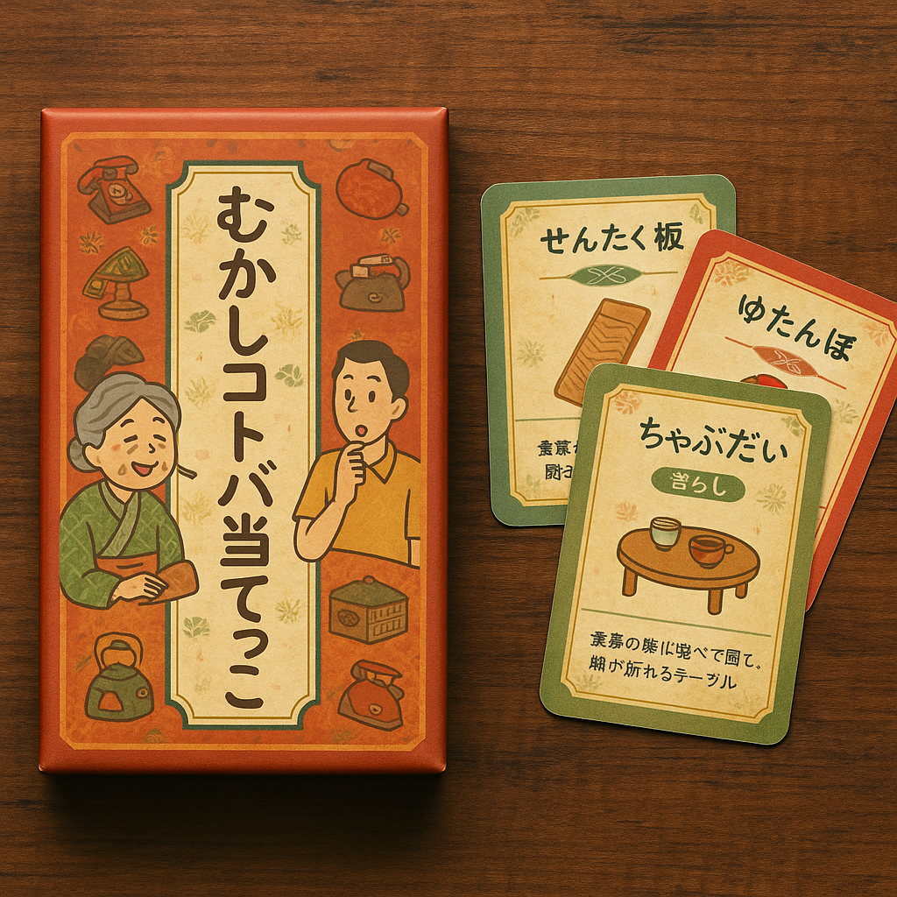

5/30
おばあちゃんたちと若者をつなげる
カードゲーム
を提案！
その名も
「ばあばとじいじに聞け！」
(イメージ図)

「ルール」
若者はカードを引き、そのカードに書かれたモノやことを名称は言わずに説明する。
(もしお題が分からなくても自分が思うお題のイメージを伝える)
(例)「ちゃぶ台」 若者：「お父さんとかが怒った時にひっくり返したりしてる・・・」
それを聞いたおばあちゃんたちがお題を当てられれば成功！
(例)おばあちゃん：「ちゃぶ台！！」
実はこういうモノなんだよ〜と説明してもらったりすると若者も知識が増えるし、
おばあちゃんたちも話ができて楽しいんじゃないかなと！
逆パターンの
若者あるある
も作っておばあちゃんたちが答える側になっても楽しそう・・